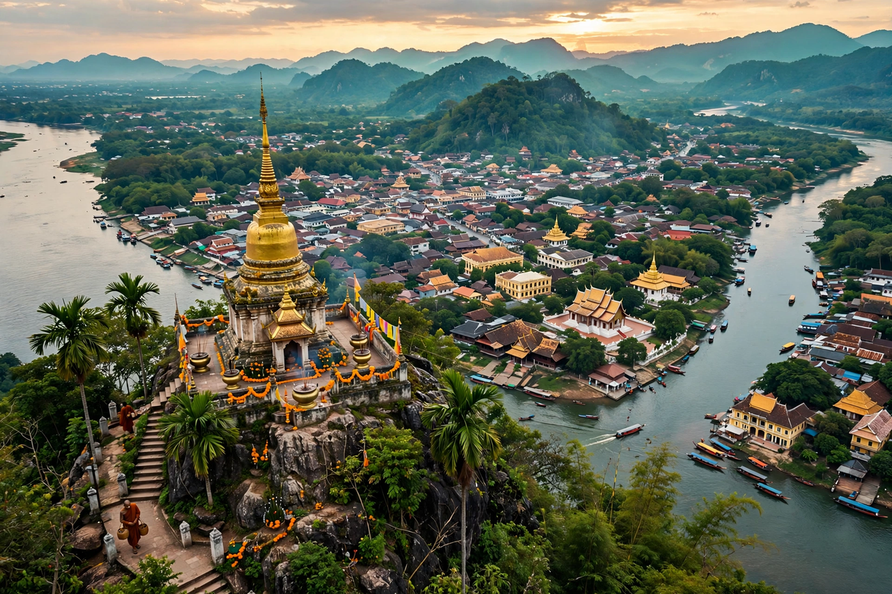

Wikipedia — the free encyclopedia

| Country | Laos |
| Status | UNESCO World Heritage Site (1995) |
| Setting | Confluence of the Mekong and Nam Khan rivers |
Luang Prabang is a city in north-central Laos at the confluence of the Mekong and Nam Khan rivers. It was the royal capital of the Lan Xang kingdom and later of the Kingdom of Laos, and remains the seat of revered temples and the morning alms ceremony (tak bat).
The old town blends Lao wooden houses and temples — Wat Xieng Thong (1560) is the masterpiece — with French colonial buildings; the whole is a UNESCO World Heritage Site. The sacred Pha Bang Buddha image gives the city its name. The Kuang Si Falls lie nearby. Luang Prabang was the royal residence until the communist takeover in 1975 ended the monarchy.